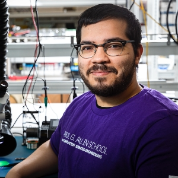
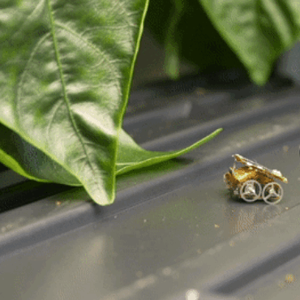
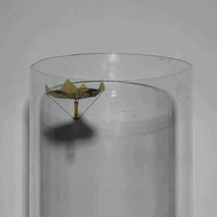
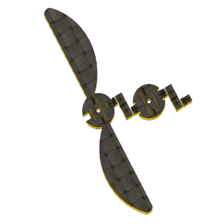
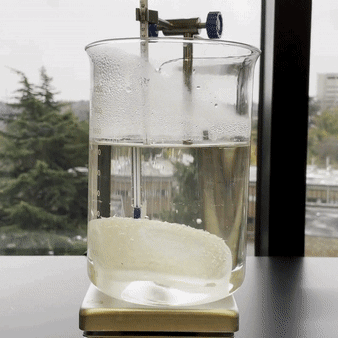
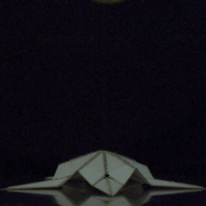
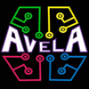

Education
research
research
Tool or Toy? Student Views on ChatGPT in Culturally Responsive Computing Education: A Preliminary Study
WEEF & GEDC 2025
I build low-power, battery-free and biodegradable systems — from insect-scale robots that fly, roll and jump on harvested energy to greener electronics — and I run STEM outreach for underrepresented youth.

Stanford · University of Washington
I am a postdoctoral researcher in the Smart Sensing Systems (S4) Lab at Stanford, led by Zerina Kapetanovic. I completed my Ph.D. in Computer Science & Engineering at the University of Washington, advised by Vikram Iyer, and worked with Sawyer Fuller's Autonomous Insect Robotics Lab.
Before that I earned my B.S. in Electrical & Computer Engineering at UW, where I studied origami structures with Jinkyu Yang. My interests span low-power systems, small-scale robotics, computing for sustainability, and applied machine learning.
* denotes co-primary student authors. Full list on Google Scholar.
WEEF & GEDC 2025
WEEF & GEDC 2024
Black Issues in Computing Education (BICE) 2024
arXiv preprint 2024

MobiCom 2023

Science Robotics 2023 Press: CNET

IROS 2023

CHI 2022 (Extended Abstracts) Press: UW News

Soft Robotics 9(5), 2022
Widening access to engineering

I co-founded AVELA — A Vision for Engineering Literacy & Access, a STEM outreach nonprofit where I serve on the board. K–12 outreach is one of my passions: AVELA runs workshops, camps and mentorship that broaden STEM interest among Black, Latine and other underrepresented students, in partnership with the City of Seattle, Seattle Public Schools, the Urban League and WA MESA.
People and groups I work with.
Happy to chat about research, collaboration or outreach.